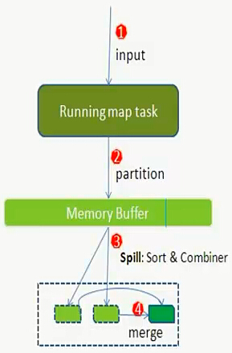
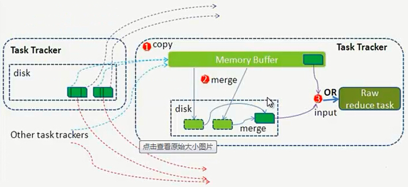

2.1 详解Shuffle过程

Shuffle过程，也称Copy阶段。reduce task从各个map task上远程拷贝一片数据，并针对某一片数据，如果其大小超过一定的阀值，则写到磁盘上，否则直接放到内存中。
官方的Shuffle过程如上图所示，不过细节有错乱，官方图并没有说明partition、sort和combiner具体作用于哪个阶段。
注意：Shuffle过程是贯穿于map和reduce两个过程的！
Hadoop的集群环境，大部分的map task和reduce task是执行在不同的节点上的，那么reduce就要取map的输出结果。那么集群中运行多个Job时，task的正常执行会对集群内部的网络资源消耗严重。虽说这种消耗是正常的，是不可避免的，但是，我们可以采取措施尽可能的减少不必要的网络资源消耗。另一方面，每个节点的内部，相比于内存，磁盘IO对Job完成时间的影响相当的大，。
所以：从以上分析，shuffle过程的基本要求：
1.完整地从map task端拉取数据到reduce task端
2.在拉取数据的过程中，尽可能地减少网络资源的消耗
3.尽可能地减少磁盘IO对task执行效率的影响
那么，Shuffle的设计目的就要满足以下条件：
1.保证拉取数据的完整性
2.尽可能地减少拉取数据的数据量
3.尽可能地使用节点的内存而不是磁盘
map端：

说明： map节点执行map task任务生成map的输出结果。
shuffle的工作内容：
从运算效率的出发点，map输出结果优先存储在map节点的内存中。每个map task都有一个内存缓冲区，存储着map的输出结果，当缓冲区块满时，需要将缓冲区中的数据以一个临时文件的方式存到磁盘，当整个map task结束后再对磁盘中这个map task所产生的所有临时文件做合并，生成最终的输出文件。最后，等待reduce task来拉取数据。当然，如果map task的结果不大，能够完全存储到内存缓冲区，且未达到内存缓冲区的阀值，那么就不会有写临时文件到磁盘的操作，也不会有后面的合并。
详细过程如下：
1.map task任务执行，输入数据的来源是：HDFS的block。当然在mapreduce概念中，map task读取的是split分片。split与block的对应关系：一对一（默认）。
此处有必要说明一下block与split
block（物理划分）：
文件上传到HDFS，就要划分数据成块，这里的划分属于物理的划分，块的大小可配置（默认：第一代为64M，第二代为128M）可通过 dfs.block.size配置。为保证数据的安全，block采用冗余机制：默认为3份，可通过dfs.replication配置。注意：当更改块大小的配置后，新上传的文件的块大小为新配置的值，以前上传的文件的块大小为以前的配置值。
split（逻辑划分）：
Hadoop中split划分属于逻辑上的划分，目的只是为了让map task更好地获取数据。split是通过hadoop中的InputFormat接口中的getSplit（）方法得到的。那么，split的大小具体怎么得到呢？
首先介绍几个数据量：
totalSize：整个mapreduce job所有输入的总大小。注意：基本单位是block个数，而不是Bytes个数。
numSplits：来自job.getNumMapTasks()，即在job启动时用户利用 org.apache.hadoop.mapred.JobConf.setNumMapTasks(int n)设置的值，从方法的名称上看，是用于设置map的个数。但是，最终map的个数也就是split的个数并不一定取用户设置的这个值，用户设置的map个数值只是给最终的map个数一个提示，只是一个影响因素，而不是决定因素。
goalSize：totalSize/numSplits，即期望的split的大小，也就是每个mapper处理多少的数据。但是仅仅是期望
minSize：split的最小值，该值可由两个途径设置： 1.子类复写函数protected void setMinSplitSize(long minSplitSize)设置。一般情况为1，特殊情况除外 2.配置文件中的mapred.min.split.size设置 最终取两者中的最大值！
最终：split大小的计算原则：finalSplitSize=max(minSize,min(goalSize,blockSize))
那么，map的个数=totalSize/finalSplitSize
注意：新版的API中InputSplit划分算法不再考虑用户设定的Map Task个数，而是用mapred.max.split.size(记为maxSize)代替 即：InputSplit大小的计算公式为：splitSize=max{minSize,min{maxSize,blockSize}}
接下来就简答说说怎么根据业务需求，调整map的个数。当我们用hadoop处理大批量的大数据时，一种最常见的情况就是job启动的mapper数量太多而超出系统限制，导致hadoop抛出异常终止执行。
解决方案：减少mapper的数量！具体如下：
1.输入文件数量巨大，但不是小文件
这种情况可通过增大每个mapper的inputsize，即增大minSize或者增大blockSize来减少所需的mapper的数量。增大blocksize通常不可行，因为HDFS被hadoop namenode -format之后，blocksize就已经确定了(由格式化时dfs.block.size决定)，如果要更改blocksize，需要重新格式化HDFS，这样当然会丢失已有的数据。所以通常情况下只能增大minSize，即增大mapred.min.split.size的值。
2.输入文件数量巨大，且都是小文件
所谓小文件，就是单个文件的size小于blockSize。这种情况通过增大mapred.min.split.size不可行，需要使用FileInputFormat衍生的CombineFileInputFormat将多个input path合并成一个InputSplit送给mapper处理，从而减少mapper的数量。增加mapper的数量，可以通过减少每个mapper的输入做到，即减小blockSize或者减少mapred.min.split.size的值。
block与split关系说清楚了，那先说到这里，还是回到shuffle的过程解说中来！
- map执行后，得到key/value键值对。接下来的问题就是，这些键值对应该交给哪个reduce做？注意：reduce的个数是允许用户在提交job时，通过设置方法设置的！
MapReduce提供partitioner接口解决上述问题。默认操作是：对key hash后再以reduce task数量取模，返回值决定着该键值对应该由哪个reduce处理。这种默认的取模方式只是为了平均reduce的处理能力，防止数据倾斜，保证负载均衡。
如果用户自己对Partition有需求，可以自行定制并设置到job上。
接下来，需要将key/value以及Partition结果都写入到缓冲区，缓冲区的作用：批量收集map结果，减少磁盘IO的影响。
当然，写入之前，这些数据都会被序列化成字节数组。而整个内存缓冲区就是一个字节数组。这个内存缓冲区是有大小限制的，默认100MB。当map task的输出结果很多时，就可能撑爆内存。需将缓冲区的数据临时写入磁盘，然后重新利用这块缓冲区。从内存往磁盘写数据被称为Spill(溢写)，由单独线程完成，不影响往缓冲区写map结果的线程。溢写比例：spill.percent(默认0.8)。当缓冲区的数据达到阀值，溢写线程启动，锁定这80MB的内存，执行溢写过程。剩下的20MB继续写入map task的输出结果。互不干涉！当溢写线程启动后，需要对这80MB空间内的key做排序(Sort)。排序是mapreduce模型的默认行为，也是对序列化的字节做的排序。排序规则：字典排序！
map task的输出结果写入内存后，当溢写线程未启动时，对输出结果并没有做任何的合并。从官方图可以看出，合并是体现在溢写的临时磁盘文件上的，且这种合并是对不同的reduce端的数值做的合并。所以溢写过程一个很重要的细节在于，如果有很多个key/value对需要发送到某个reduce端，那么需要将这些键值对拼接到一块，减少与partition相关的索引记录。如果client设置过Combiner，其会将有相同key的key/value对的value加起来，减少溢写到磁盘的数据量。注意：这里的合并并不能保证map结果中所有的相同的key值的键值对的value都合并了，它合并的范围只是这80MB，它能保证的是在每个单独的溢写文件中所有键值对的key值均不相同！
溢写生成的临时文件的个数随着map输出结果的数据量变大而增多，当整个map task完成，内存中的数据也全部溢写到磁盘的一个溢写文件。也就是说，不论任何情况下，溢写过程生成的溢写文件至少有一个！但是最终的文件只能有一个，需要将这些溢写文件归并到一起，称为merge。
merge是将所有的溢写文件归并到一个文件，结合上面所描述的combiner的作用范围，归并得到的文件内键值对有可能拥有相同的key，这个过程如果client设置过Combiner，也会合并相同的key值的键值对，如果没有，merge得到的就是键值集合，如{“aaa”, [5, 8, 2, …]}
注意：combiner的合理设置可以提高效率，但是如果使用不当会影响效率！
- 至此，map端的所有工作都已经结束！
Reduce端：
当mapreduce任务提交后，reduce task就不断通过RPC从JobTracker那里获取map task是否完成的信息，如果获知某台TaskTracker上的map task执行完成，Shuffle的后半段过程就开始启动。其实呢，reduce task在执行之前的工作就是：不断地拉取当前job里每个map task的最终结果，并对不同地方拉取过来的数据不断地做merge，也最终形成一个文件作为reduce task的输入文件。

1.Copy过程，简单地拉取数据。Reduce进程启动一些数据copy线程（Fether），通过HTTP方式请求map task所在的TaskTracker获取map task的输出文件。因为map task早已结束，这些文件就归TaskTracker管理在本地磁盘。
2.Merge过程。这里的merge如map端的merge动作，只是数组中存放的是不同map端copy过来的数值。Copy过来的数据会先放入内存缓冲区中，这里缓冲区的大小要比map端的更为灵活，它是基于JVM的heap size设置，因为shuffler阶段reducer不运行，所以应该把绝大部分的内存都给shuffle用。
merge的三种形式：
内存到内存、内存到磁盘、磁盘到磁盘
默认情况下，第一种形式不启用。当内存中的数据量达到一定的阀值，就启动内存到磁盘的merge。与map端类似，这也是溢写过程，当然如果这里设置了Combiner，也是会启动的，然后在磁盘中生成了众多的溢写文件。第二种merge方式一直在运行，直到没有map端的数据时才结束，然后启动第三种磁盘到磁盘的merge方式生成最终的那个文件。
3.reducer的输入文件。不断地merge后，最后会生成一个“最终文件”。这个最终文件可能在磁盘中也可能在内存中。当然我们希望它在内存中，直接作为reducer的输入，但默认情况下，这个文件是存放于磁盘中的。当reducer的输入文件已定，整个shuffle才最终结束。然后就是reducer执行，把结果存放到HDFS上。